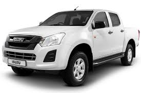
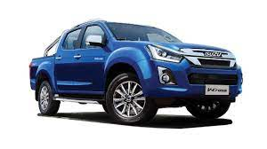
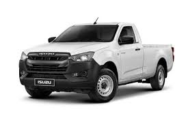
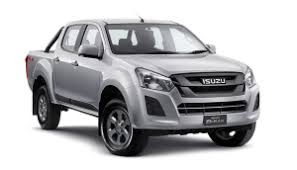

Isuzu Motors' history began in 1916, when Tokyo Ishikawajima Shipbuilding and Engineering Co., Ltd. planned a cooperation with the Tokyo Gas and Electric Industrial Company to build automobiles.
to find out more about the Isuzu D-Mux
Hi Spark (4*2) Deckless
Hi Lander (4*4) Single cabin
Hi Spark (4*2) Standard
Hi Spark (4*4) Double cabin
There are many advantages to running an Isuzu truck. We have always cared about our customers and the success of their businesses, and understand that a company’s success or failure can depend upon the efficiency of its vehicles.
This is why we have developed our award-winning customer care programme, a unique and comprehensive customer service programme designed around the challenges our customers face.
Alongside our customer care programme, there are a number of other important benefits associated with running an Isuzu truck. We’ve compiled them here to help you compare and contrast our vehicles with those of our competitors:
All of the trucks in our range are designed and engineered for maximum payload capacity, increasing the weight you can carry on each journey and reducing the total number of journeys you have to take.
Innovative engineering makes our vehicles robust and reliable. They are designed to cope in some of the world’s most challenging environments and terrains, making them a good choice if you require a vehicle that can withstand prolonged use and punishment.
The compact cab design of our vehicles makes them ideal for multi-drop delivery companies, as the cabs are lower to the ground and provide easier access for drivers and passengers. The shorter cab length also means our trucks have a tighter turning circle, which makes it much easier to manoeuvre them in and around housing estates and narrow country lanes that would otherwise be difficult to access.
An Isuzu truck is a sound investment for your business. Not only are our vehicles competitively priced and available with a range of flexible finance options, you can bring your whole vehicle life cost down by agreeing a fixed-price repair and maintenance contract with our R&M team.
When you buy an Isuzu truck you are automatically included in our award-winning customer CARE programme. As part of the programme you will be assigned a Customer Care Liaison Executive who will contact you at regular intervals to ensure you are happy with your truck(s) and the service you are receiving from us.